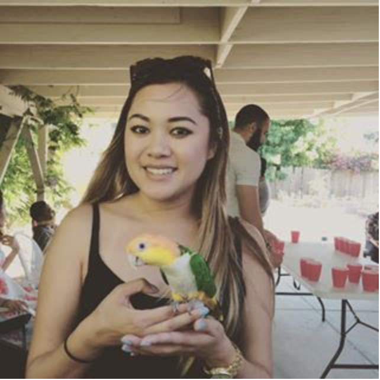

 My name is Jessica Nguyen and I am a CSU East Bay alumni. I received my Bachelor of Science in Health Science Administration and Management. I really enjoyed college but quickly realized that the healthcare industry was not something I wanted to pursue. I dove into an investment firm right out of college where I worked for the past three years where I slowly realized that finance was also an industry I did not want to pursue further. After some research and having discussions with people from various fields, I narrowed my options down to accounting and web development. I am sure you can guess what my final decision was. When I am not busy focusing on the direction of my future and career, I love being active and being outdoors. I love hiking, tennis, running and going to the beach. I absolutely love animals. I have two dogs: a chihuahua/terrier mix and a mini dachshund. Even though they are terribly behaved, they are my bundles of joy!